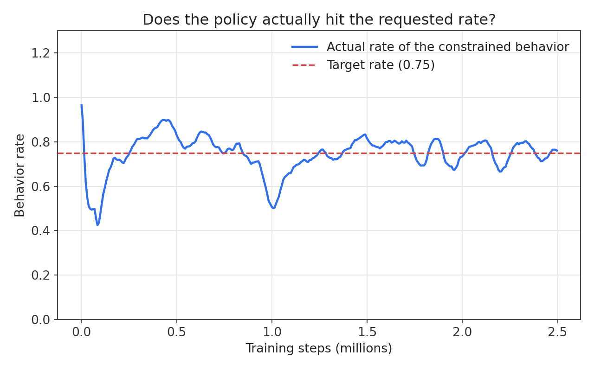
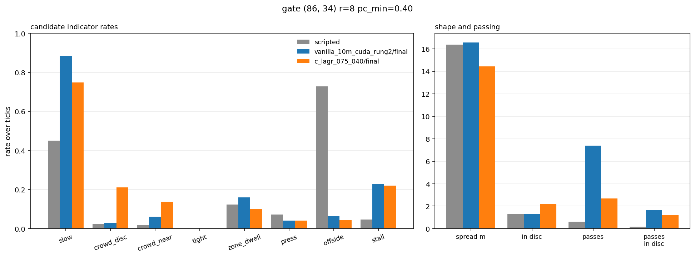

Behaviour as a threshold, not a weight
Constrained PPO with a Lagrangian CMDP layer, swept over five behaviour thresholds and three seeds, to answer one question. If I ask for a rate, do I get it?
The football is a substrate. Ten attackers share one policy against eleven defenders sitting in a StatsBomb-calibrated low block, and the task is to get the ball into a disc at (86, 34) of radius 8 m without letting mean attacker pitch control fall below 0.40. What I am really testing is a claim from Roy et al. (2022): that you can specify behaviour as a threshold with units you understand, rather than as a reward weight you find by fiddling.
Why reward engineering fails at this
The usual move is to fold each behaviour you want into the reward as a weighted term, then tune the weights until it looks right. Works fine for one or two terms. After that it falls apart, for two reasons that feed each other.
The first is geometric. Every requirement you add shrinks the region of weight space where all of them hold at once, and it shrinks multiplicatively. So the hunt gets harder for reasons that have nothing to do with how hard the task is. Add a fourth requirement to three that already work and you'll usually end up retuning all four.
The second is that the weights don't mean anything on their own. A coefficient of 0.3 on a speed penalty tells you nothing about the world. It tells you something about this reward scale and this discount factor and the way I happened to normalise advantages. Change any of that and it's worthless. You can't look at 0.3 and say how often the agent will be slow. You run it and find out.
A weight is a guess you validate after training. A threshold is something you can check the run against.
The constrained version swaps weights for bounds. Instead of penalise slowness by 0.3 you write be slow on at most 65% of attacker-ticks and let the optimiser find the multiplier that makes it true. The number you type is supposed to be the number you get back. That's a testable claim, so I tested it.
The three mechanisms
Three parts of the paper's design carry the weight here. Pull any one of them
out and it stops working. All three live in
model/ppo_constrained.py.
1. Indicator cost functions
Every cost is 0 or 1. The slow cost fires on an attacker-tick
when that attacker is moving slower than 2.0 m/s, and it's zero the rest
of the time. Because it's an indicator, the batch mean is a rate, so
the threshold you set is just a probability between 0 and 1. You don't need a
calibration phase to work out what a sensible bound looks like. And someone
who has never opened the reward function can still read the constraint and
know what it asks for.
I count it per attacker-tick rather than per team-tick. That sounds like a detail and isn't. The team-mean version, the average attacker speed is below 2.0 m/s, is useless here: the unconstrained baseline already satisfies it on 0.999 of ticks, so there's no gradient in it and the optimiser gets to give it away for free. Per attacker, the same baseline sits at 0.885. That leaves the dial somewhere to go.
2. Softmax-normalised multipliers
The multipliers λ are not free non-negative scalars. They are a softmax over a logit vector whose first entry is pinned to zero, so λ lives on a simplex and λ₀, the weight on the main objective, drops out of the same softmax as 1 − Σλₖ. The effect is that no single constraint can run away. Without the normalisation, one constraint the agent cannot satisfy will drive its own multiplier up forever. That scales the advantages it multiplies, which blows up the critic, which takes the run with it. On the simplex the worst it can do is eat most of the budget.
3. Bootstrap success constraint
A policy that hasn't solved the task yet has nothing to trade against the constraint. λ₀ collapses, and the agent settles on whatever satisfies the constraint most cheaply. Here that means standing still. Forever.
The paper's fix is a second constraint pointing the other way, a lower bound on success, plus an effective λ̃₀ = max(λ₀, λboot) that keeps a floor under the main objective while the optimiser is still hunting for anything feasible. I held the bootstrap at 0.40 on every run. Without it the runs converge on a policy that satisfies the constraint beautifully and never goes anywhere near the zone.
You can watch the handover happen in the logs. λ₀ overtakes λboot somewhere between 0.8M and 1.9M steps depending on the target, and after that the task reward carries itself.
What was measured
The swept constraint is slow, at target rate
d ∈ {0.45, 0.55, 0.65, 0.75, 0.85}, three
seeds each, 2.5M steps a run. Fifteen runs in total. The unconstrained
baseline sits at 0.885, so the sweep covers 39 points of behaviour underneath
it.

Every rate I report comes from a frozen-policy probe. Final weights, no learning, 150,000 attacker-ticks per policy. That's the measurement the specification claim is actually about. Reading the training logs instead makes everything look better (MAE 0.0241 against 0.0442) because it averages over updates where the policy was still moving, and both sit side by side on the results page so you can judge.
Success rates come from neither. The probe cuts episodes off at a fixed window, which quietly favours the short failures over the long wins, so I measure success separately on episodes that run to termination, with Wilson intervals.
The dial works. Achieved tracks requested with slope 0.93, R² 0.86, MAE 4.4 points and bias −0.0066 across the whole 39-point span. Nine of the fifteen runs finished at or below their threshold. What's left is scatter rather than drift, which is the failure mode I'd have picked.
The constraint bought exploration
A behavioural constraint is supposed to cost you task performance. Here it did the opposite. Constrained at 2.5M steps gets 81.0% [78.3, 83.5] success; the unconstrained baseline, trained four times longer out to 10M, gets 71.0% [67.9, 73.9], n = 900 each over three seeds. Four times the samples for a worse policy.
My best guess is that the constraint acts as an exploration prior. Holding the speed distribution in place rules out the huge region of policy space where ten attackers sprint independently at a packed defence, and that's exactly where an untrained policy goes to learn nothing. The price curve backs it up. Success peaks at d = 0.55, not at the loosest threshold, so the constraint improved the very thing it was supposed to be competing with.
Where it breaks: reproducibility
The dial is reliable on average and not always on a given run. At d = 0.65 the three seeds land within a standard deviation of 0.010. At d = 0.45 they land on 0.368, 0.577 and 0.488. That's sd 0.105, a spread wider than the gap between neighbouring targets in the sweep. Seed 2 overshot its threshold by more than twelve points.
This is the biggest weakness in the result and I'd rather say so here than bury it in a caption. If your specification mechanism wanders by a tenth of its own range depending on the seed, you're still checking every run by hand, which is most of the work the mechanism was meant to save you. The tight end is where the feasible set is smallest and where the multiplier's learning rate is working hardest. Obvious next thing to look at. This sweep doesn't answer it.
Where it breaks again: the side effect
Pushing the speed distribution down produced a behaviour nobody asked for.
Against the unconstrained baseline the constrained policy crowds the target
disc, crowd_disc going from 0.029 to 0.211. It also hogs the ball
(possession 9% → 75%) and takes half again as long to finish
(82 → 125 ticks). It worked out that a slow team which keeps the ball
and packs bodies into the zone satisfies the constraint and the task at the
same time. Which it does. That's the annoying part: it's a perfectly good
answer to the specification I actually wrote.

attackers/probe/behaviour_episodes.csv. Constraining
slow moved crowd_disc and crowd_near
too, and I had constrained neither of them.
This is the paper's own thesis coming back at me from the other side. Reward engineering fails because a scalar objective underdetermines behaviour, and constraining one behaviour doesn't fix that. It moves the slack somewhere I wasn't looking. The fix is the paper's as well: name the thing you didn't want, give it an indicator and a threshold, add it to the set. Cheap to do, precisely because the multipliers are normalised and the thresholds carry units. I haven't run it. Next experiment, not a caveat.
Deviations from the paper
The implementation follows Roy et al. §4 but sits on PPO instead of SAC, which forces four changes. All four are deliberate, and all four are places where my numbers could drift from theirs, so they're worth naming.
| Paper | Here | Why |
|---|---|---|
| Combine at SAC Q-values | Combine at the advantage level, each component standardised | Q-values carry their own scale; standardising makes λ a genuine relative weight |
| K+1 independent critics | Shared trunk, separate value heads | K+1 full critics over a 120-dim observation is mostly duplicated representation |
| Cost critic targets as sums | (1−γ) scale on cost-critic targets | Keeps the target a rate in [0,1] rather than a sum near 55, which would swamp the reward critic |
| Bootstrap rate from the rollout | Trailing 100-episode window | A single rollout holds too few finished episodes to estimate a success rate |
The first one is where I'd look first if something didn't reproduce. Standardising each advantage component before weighting is what makes the simplex reading hold, because λ ends up comparing like with like. The cost is that the multiplier stops seeing how badly a constraint is being violated and only sees the direction and roughly the rank. The violation term driving λ still reads the raw batch rate, so the threshold still means what it says. It's the gradient reaching the policy that's been standardised.
What this shows
Over a 39-point span, on a task with real physics and an opponent that fights back, a threshold in [0, 1] delivered the behaviour rate it named to within about four points. I tuned no reward weights to get there. It cost nothing on the main task either, and bought a fourfold improvement in sample efficiency, which is a stronger claim than the paper makes and is probably specific to environments where naive exploration actively hurts you.
Set against that: the guarantee holds on average, it gets shakier exactly where the constraint is tightest, and satisfying one specification handed me a second behaviour that would need a threshold of its own. I think the mechanism is good. It's not a way to stop thinking about what you asked for.
References
Roy, J., Girgis, R., Romoff, J., Bacon, P.-L., & Pal, C. (2022). Direct Behavior Specification via Constrained Reinforcement Learning. ICML 2022. arXiv:2112.12228
Spearman, W., Basye, A., Dick, G., Hotovy, R., & Pop, P. (2017). Physics-Based Modeling of Pass Probabilities in Soccer. MIT Sloan Sports Analytics Conference.
Spearman, W. (2018). Beyond Expected Goals. MIT Sloan Sports Analytics Conference.